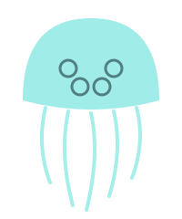
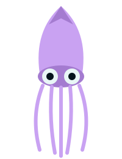
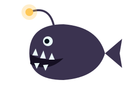

Moon jelly
Sunlight zone
- Depth
- 0 to 50 m
- Size
- Up to 40 cm wide
The four pale rings you can see through its bell are its reproductive organs.
Three animals, one from each of the first three zones. Press a button to reveal a fact.

Sunlight zone
The four pale rings you can see through its bell are its reproductive organs.

Twilight zone
It has the largest eyes of any animal, about the size of a dinner plate.

Midnight zone
Its lure glows because glowing bacteria live inside it.
Compare their homes on the zones page.